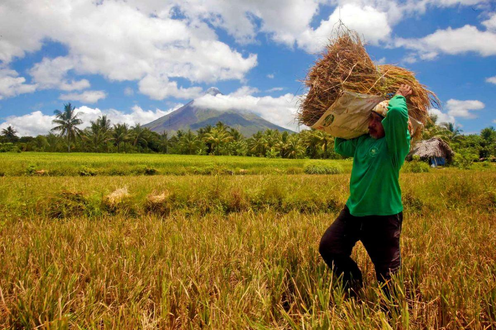

Nuvali Central Bloc: MerryMart + NAOS live; Yuimaru / Seoul Kitchen / Locals Coffee in Q4
22–23 Sep 2026
Context.ph / Ayala Land Estates: The Shops NUVALI at Central Bloc is filling as an everyday hub, not waiting for the SM Nuvali garden mall. MerryMart is open daily 8am–8pm with groceries, fresh and frozen, household and pharmacy; NAOS Café NUVALI sits inside as café, co-work and gathering space. Ayala says ten more Q4 doors: Yuimaru, Seoul Kitchen, Locals Coffee and Harinaya on the dining side, plus Nailandia Luxe, Nuat Thai Premier, Lukkas Barbers, David’s Salon, Dela-Paz Oglimen Dental and Studio Naya Pilates. Gilbert Ramos framed it as “more complete and connected estate.” Weekend Markets stay as the resident-baker / food-entrepreneur lane. Operator read for Calamba: this is your Santa Rosa catchment thickening at estate scale — grocery + Korean/Jap casual + coffee — while yesterday’s tape already locked SM Sto. Tomas (+30% Oct) and SM Nuvali (Nov 27). Map whether you sell into Central Bloc footfall, chase the mall garden ring, or stay neighborhood/commissary. Don’t treat “Nuvali” as one date; it is two clocks (estate shops now, SM flagship later).
Open Context.ph · Open Ayala Land

PSA: Q3 palay −15%, corn −14.4%; rice retail near ₱50
16–18 Sep 2026
GMA / PSA: Standing crop as of August points to July–September palay at 3.19 million MT, down 15% from 3.75 million MT a year earlier; harvest area shrinks 15.8% to 771,790 ha. Corn outlook 2.08 million MT (−14.4%), harvest area −12.8% to 688,030 ha. Only 56.4% of the 1.58 million ha palay target and 38% of the corn plant target were planted in the window — after four tropical cyclones from July into early September. DA’s final storm tally still shows rice at ₱2.05B of the ₱4.38B agri damage. Separately, PSA’s Sep 1–5 price situationer (SunStar, Sep 18) puts regular milled rice at ₱49.96/kg — little changed from August, but +24% YoY from ₱40.31 — with cabbage jumping ~37% MoM to ₱125.86/kg and carabao mango +17% MoM. Operator take: DA said earlier rice retail should hold despite storm damage; the production cut is the forward risk. For a Calamba kitchen, rice near ₱50 and storm-lag veg are the plate-cost inputs for Q4 menus — lock supplier quotes and portion math before holiday volume, and don’t read “stable vs August” as “cheap vs last year.”
Open GMA · Open SunStar
PROMO Forgotten Island goes nationwide today; ₱99 fillet ends tomorrow
23 Sep 2026
Interaksyon / Jollibee: The Forgotten Island Adventure Bundle — Chickenjoy + rice + Pineapple Quencher, Peach Mango Pie à la Mode and with chocolate sauce, plus Friendship Charm Bracelet — soft-launched in Mega Manila Sep 16 and goes nationwide today through Oct 31 while supplies last. DreamWorks’ Filipino-mythology film opens in PH cinemas the same day (voices H.E.R. and Liza Soberano). Dorothy Ching sold it as friendship memory at the table. Same week: the ₱99 Pepper Cream Chicken Fillet combos (with fries/drink, spaghetti, or Coke Float) still run only through Sep 24. Flag both as promo. Operator read: JFC is stacking film nostalgia and sub-₱100 fillet against McD’s Asia Chicken McSpicy/Cajun heat from this week. That is the taste-or-savings split in one calendar — memory combo vs spicy thigh theatre. If you plate chicken in South Luzon, pick a lane for the next two weeks; don’t try to out-promo Jollibee’s bracelet and out-heat McD’s K-drop with one SKU.
Open Interaksyon · Open Jollibee